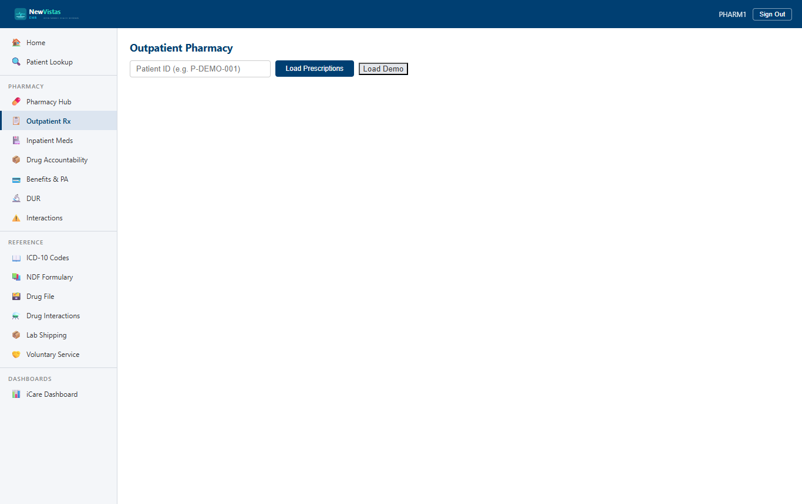

Manual › Pharmacist › Verify & Fill
Prescription Verification & Fill
The Outpatient Pharmacy screen is where you verify, fill, refill, hold, and discontinue a patient's prescriptions. It's the equivalent of VistA's Outpatient Pharmacy package.
Load a patient's prescriptions
- In the sidebar, under Pharmacy, open Outpatient Pharmacy (or go to
/outpatientpharmacy). - In the Patient ID field, type the patient ID (e.g.
4). - Click Load Prescriptions.
- The prescription table loads with columns: Drug, Dosage, Status, Priority, Refills Left, Expires, Verified, Counsel, and Provider.

Verify and fill a prescription
An unverified prescription shows an empty Verified column. A pharmacist must verify it before it can be filled.
- Click the prescription's row to select it. The detail panel opens, showing Rx ID, drug, status, verification state, and priority.
- Click Verify. The action message confirms "Action 'verify' completed successfully."
- The detail panel now shows Verified by and the date/time, and the row's Verified column shows a checkmark.
- The Fill button becomes available. Click it to dispense.
Fill is gated on safety checks
A fill can be blocked if a Drug
Utilization Review has not been cleared ("DUR assessment has not
been cleared.") or if an interaction screen flagged a significant or
contraindicated interaction. Resolve or override the check first, then
fill.
Refill an eligible prescription
- Select a verified, filled prescription (e.g.
LISINOPRIL 10MG TAB). - In the Refill Status section, confirm it shows Eligible (green badge) and the refills remaining.
- Click Refill. The message confirms "Action 'refill' completed successfully."
- The Refills Left column decrements, and a new row appears in the Refill History table (fill number, date, quantity, days).
When a refill is blocked
When a prescription isn't refillable, the Refill Status shows Not Eligible (red badge), the Refill button is disabled, and the Reasons list explains why:
- No refills remaining — the authorized refills are used up (Schedule II controlled substances are always created with zero refills, so they hit this immediately).
- Too early to refill — the 75% rule isn't met yet. The panel shows the percentage consumed and the Next eligible date.
- Prescription has expired — the expiration date has passed.
The 75% rule
A fill isn't eligible until roughly 75% of the days supply has elapsed. On
a 30-day supply that's about 22.5 days, so a refill attempted 10 days after
the last fill is blocked as too early.
Hold and resume
- Select an active prescription and click Hold.
- Status changes to HOLD (orange badge), and a hold reason is recorded.
- The action bar now shows only Resume — Fill, Refill, Discontinue, and Hold are hidden while on hold.
- Click Resume to return the prescription to ACTIVE, clear the hold reason, and restore the full action bar.
Discontinue with a reason
- Select the prescription and click Discontinue.
- A reason row appears with Confirm D/C and Cancel buttons.
- Type the discontinue reason (e.g. "Patient developed lactic acidosis — discontinue metformin per provider order").
- Click Confirm D/C. Status changes to DISCONTINUED (red badge), the D/C reason is stored, and no action buttons remain.
⚠ Discontinue is terminal
A discontinued prescription cannot be filled, refilled, held, or
re-verified — the action bar disappears entirely. If therapy needs to
restart, the provider must write a new prescription.